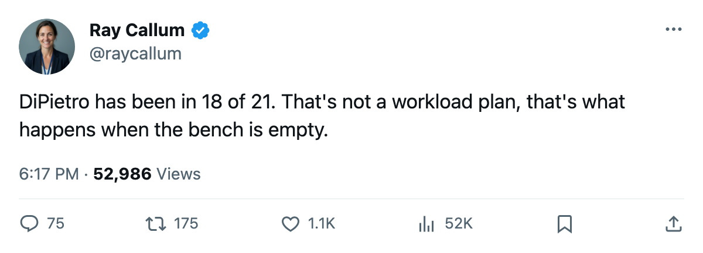

The Infirmary: New York Has Lost More Man-Days to Injuries Than Anyone Else in the League
Eighteen injury spells, 314 days gone, six men still out, and the Islanders are on a 4-game losing streak.
 Ray CallumSenior correspondent · Home Ice Network
Ray CallumSenior correspondent · Home Ice Network
 Rick DiPietro86 has started 18 of the
Rick DiPietro86 has started 18 of the  New York Islanders's 21 games. The backup,
New York Islanders's 21 games. The backup,  Garth Snow80, has 6. That's 24 appearances between them, so the goalies have been working with not enough bodies in front of them.
Garth Snow80, has 6. That's 24 appearances between them, so the goalies have been working with not enough bodies in front of them.
The Islanders have logged 18 injury spells and 314 days lost, both figures the highest in the league. Vancouver sits at 18 spells and 184 days. Atlanta is at 14 spells and 178 days. New York's 314 days lost dwarfs every other club's total.
The shelf is the problem
Six men are currently out past today:  Oleg Kvasha79 (a foot, back January 5),
Oleg Kvasha79 (a foot, back January 5),  Mariusz Czerkawski75 (an elbow, back December 7),
Mariusz Czerkawski75 (an elbow, back December 7),  Radek Martinek72 (an elbow, back December 21), Justin Papineau72 (a foot, back December 12), and two others on the unavailable list. The body parts cluster: two feet, two elbows, so no single positional group has been gutted, but the depth chart is thin in every direction.
Radek Martinek72 (an elbow, back December 21), Justin Papineau72 (a foot, back December 12), and two others on the unavailable list. The body parts cluster: two feet, two elbows, so no single positional group has been gutted, but the depth chart is thin in every direction.
| Club | Spells | Days Lost | Currently Out |
|---|---|---|---|
| NYI | 18 | 314 | 6 |
| VAN | 18 | 184 | 4 |
| ATL | 14 | 178 | 4 |
| PHI | 16 | 150 | 2 |
| PIT | 19 | 120 | 1 |
| CBJ | 18 | 99 | 3 |
The Islanders are 9-8-3 with 23 points, fifth in the Atlantic Division and tied for seventh in the Eastern Conference. They're still in the conversation, but the 3-7 road record and the 4-game losing streak say the attrition is catching up.
On Wednesday in New York, they lost 4-1 to  New York Rangers and managed 17 shots. Their scoring has thinned: 29 goals in their last 10 games against 26 allowed.
New York Rangers and managed 17 shots. Their scoring has thinned: 29 goals in their last 10 games against 26 allowed.
DiPietro carries 86 percent of the workload. Only  Roman Cechmanek86 in Los Angeles (95 percent),
Roman Cechmanek86 in Los Angeles (95 percent),  Jamie Storr83 in Colorado (90 percent), and
Jamie Storr83 in Colorado (90 percent), and  Nikolai Khabibulin90 in Tampa Bay (90 percent) carry higher shares among goaltenders with 15 or more starts. But Los Angeles is 4-11-4, Colorado is 8-7-4, and Tampa Bay has 8 injury spells and 4 days lost. None of them is losing as many men to the shelf as New York.
Nikolai Khabibulin90 in Tampa Bay (90 percent) carry higher shares among goaltenders with 15 or more starts. But Los Angeles is 4-11-4, Colorado is 8-7-4, and Tampa Bay has 8 injury spells and 4 days lost. None of them is losing as many men to the shelf as New York.
The next game is November 27, when the Islanders host  Ottawa Senators. The Senators have 2 men out. The Islanders have 6.
Ottawa Senators. The Senators have 2 men out. The Islanders have 6.
